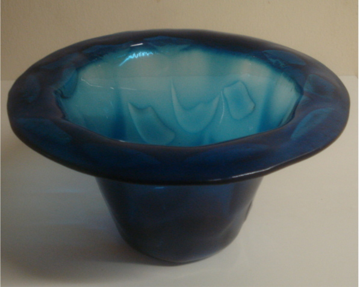

Sävykuva 2
Tässä syväslumpatussa työssä nälyy sävytys sekä vajutuksen aiheuttamana ohentumana
että kirkaan lasin syväfuusauksella saatuna laimentumisena. Mukana on käytetty myäs
peruslasin tumman värin palasia luomaan tummempia sävyjä lähelle pohjaa.

edellinen kuva
seuraava kuva
Paluu tekstiin